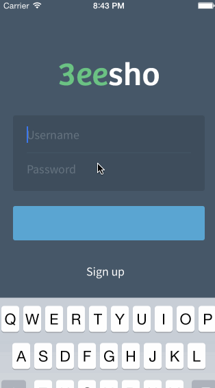
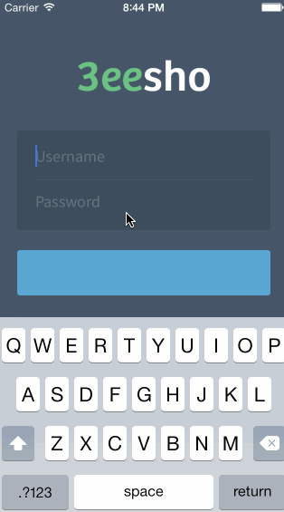

3eesho
"Quinoa" Health App
This is an iOS 7 app designed for 3eesho (eyee-sho), an Arabic health and lifestyle social network. We created an app that can help people lose weight and live a healthier life by enabling them to record their activities and connecting them to experts.
Seeker Workflow
- Dashboard: provides an overview for goals and stats based on activities.
- Trainer
- Trainer Browser: browse experts and select one.
- Current Trainer: see the latest interactions and chat with the trainer.
- (+) Add activity
- Record the current weight in pounds.
- Add a physical activity duration in minutes.
- Add a dietary activity by taking a picture of the meal.
- Profile
- Activities: display my activities in reverse chronological order.
- Edit Profile

Expert Workflow
- Activities
- Display a list of activities from all of the clients.
- Give "Kudos" to ones worthy of a compliment.
- Clients
- Display a list of clients.
- Chat with the clients.
